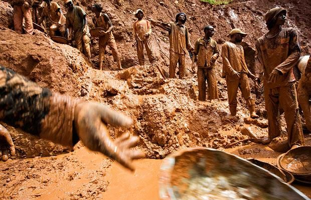
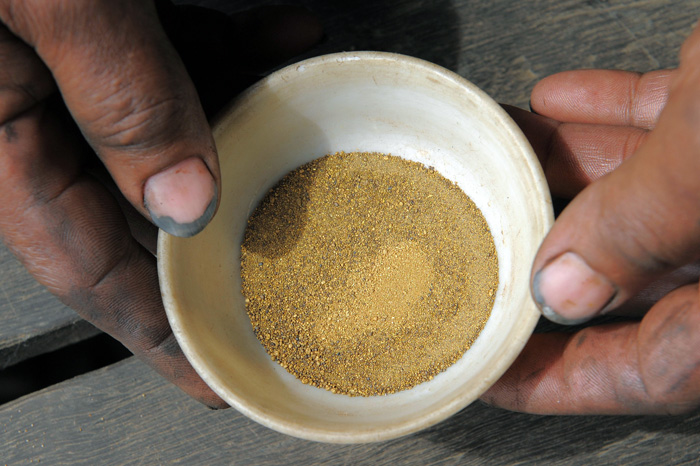
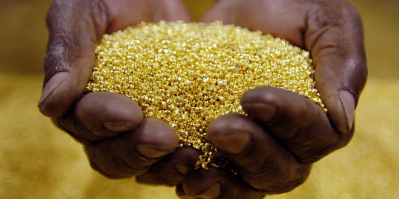

| Mundo Ambiental | Ir al inicio. |
| Impacto del coltán en Colombia | Desarrollo sostenible y ambiental | Explotación de oro de aluvión | Consecuencias de la minería en Colombia |
|  | Impacto del coltán en Colombia Desde el 2012, la demanda del coltán en Colombia y en el mundo ha aumentado drasticamente debido a que éste mineral es usado en la fabricación de los actuales smarthphones. La extracción de este mineral se hace en condiciones inhumanas, por ejemplo, en la República del Congo la gente pobre la usa como medio para subsistir, lo cual generó un conflicto interno que lleva 5.000.000 de muertos y también afecta a la fauna y biodiversidad. En Colombia también se ha sobreexplotado este mineral y las consecuencias son irreversibles. Seguir leyendo... | Publicidad |
| Desarrollo sostenible y ambiental En Colombia, ninguna región esta libre de los efectos adversos del ambiente, tales como desechos sólidos y peligrosos, aguas contaminadas, aires contaminados, sustancias tóxicas y radiaciones no ionizantes. Las regiones que se ven más afectadas por estos entes son la región atlántica, el valle del cauca, la región pacífica y cundinamarca (Bogotá). Al no controlar estos agentes contaminantes se provocan consecuencias que podrían llegar a ser mortales para el ser humano. Seguir leyendo... |  | |
|  | Explotación de oro de aluvión Desde que llegaron los españoles a América, en busca del dorado, la fiebre por el oro ha aumentado hasta en las personas nativas;hoy en día hay explotaciones de oro ilegales(minas ilegales) y estas afectan grave y directamente al medio ambiente, porque le quitan el hábitat natural a todos aquellos animales que viven allí, aparte contaminan las aguas y nosotros mismos estamos terminando con nuestros recursos por causa de la codicia. Será nuestra culpa cuando en un futuro los recursos se acaben y la humanidad deje de existir, no podremos quejarnos. Seguir leyendo... |  |
|  | Conflicto armado y explotación de oro en Colombia El oro y la minería en Colombia va creando conflicto armado alrededor de todo el país, problemas creados por el gobierno al entregar territorio Colombiano que ya estaba siendo usado por otros Colombianos irrespetando su lugar de trabajo y por ende el resultado de este. Seguir leyendo... |  |